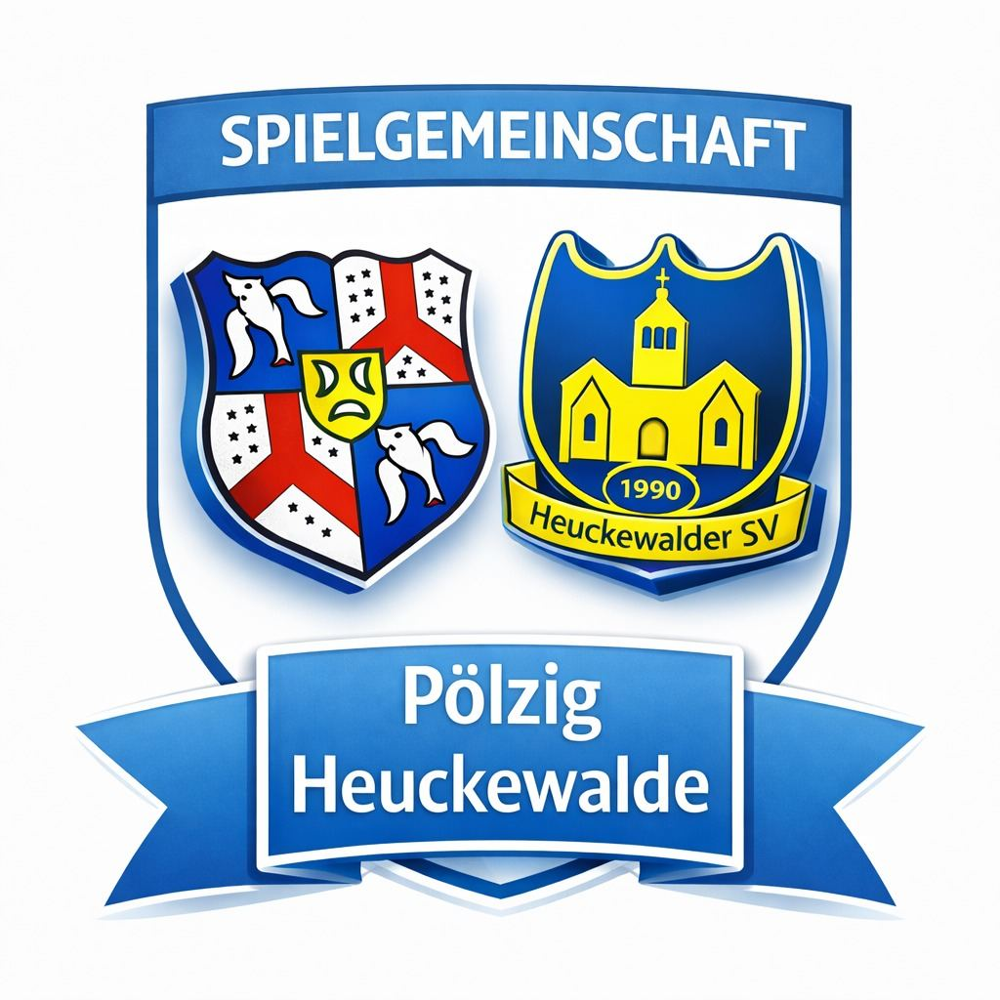

Abteilung
Fußball
Die größte Abteilung im Verein, mit Herren-, Alte-Herren- und Jugendmannschaften.
Training
1. Männermannschaft: Dienstag & Donnerstag, 18:30–20:00 Uhr, Sportplatz Pölzig
A-Junioren: Dienstag & Donnerstag, 18:00–19:30 Uhr, Halle Pölzig
D-Junioren: Mittwoch & Freitag, 17:30–19:00 Uhr, Halle Pölzig
Abteilungsleiter: Jan Steinbach
Spielgemeinschaft Pölzig-Heuckewalde
Unsere Fußball-Abteilung tritt aktuell als Spielgemeinschaft gemeinsam mit dem Heuckewalder SV an. Deshalb wird neben dem Sportplatz Weg der Jugend in Pölzig auch der Platz in Gutenborn genutzt, dieser gehört zum Heuckewalder SV.

Unsere Teams
Jugendmannschaften spielen als SpG TSV 1861 Pölzig / Heuckewalder SV, Ansprechpartner ist der Jugendleiter.
Herren
SG Pölzig / Heuckewalde
A-Junioren
SpG TSV 1861 Pölzig / Heuckewalder SV
D-Junioren
SpG TSV 1861 Pölzig / Heuckewalder SV
G-Junioren
SpG TSV 1861 Pölzig / Heuckewalder SV II
Jugendleiter: Maximilian Czapek